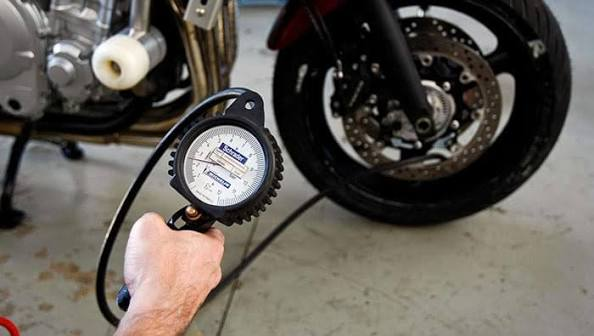

1. Revisa las llantas
Comprueba la presión recomendada, el desgaste y el estado general antes de salir.
CUIDA TU MÁQUINA
Una revisión periódica ayuda a mantener tu motocicleta en buenas condiciones.

Comprueba la presión recomendada, el desgaste y el estado general antes de salir.

Verifica su funcionamiento y revisa las pastillas y el líquido según el manual.

Si tu moto tiene cadena, revisa su tensión, lubricación y limpieza de acuerdo con el fabricante.

Comprueba el nivel y realiza los cambios con el tipo de aceite y los intervalos indicados en el manual.
Comprueba luces, espejos, llantas, frenos y posibles fugas. Si detectas una falla importante, no conduzcas hasta revisarla.